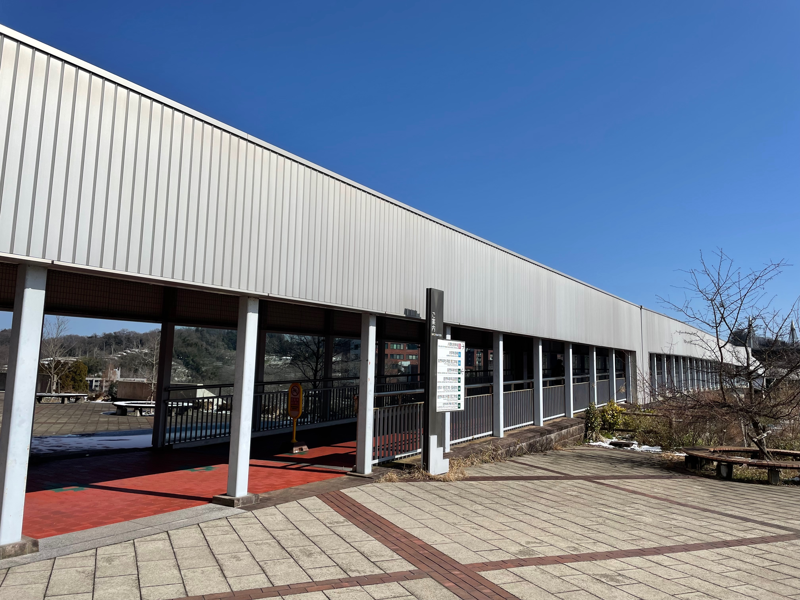
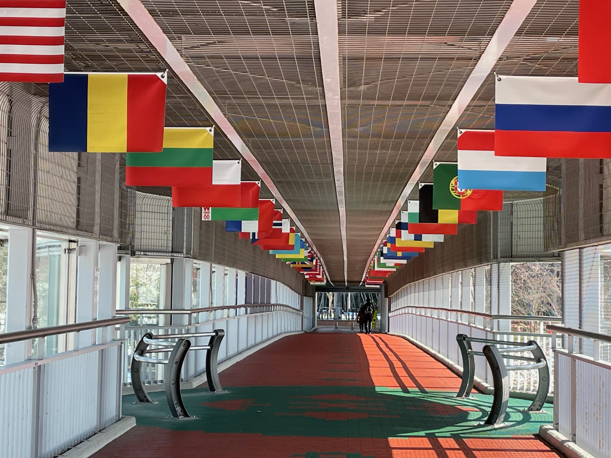

Reading Seminar: Spring 2024


第8回：中川毅『人類と気候の10万年史』（講談社ブルーバックス、2017年）
リーディングセミナーでは、近年、⼤学界隈において話題の、⾼校⽣向けに書かれた(または⾼校⽣にも考えて欲しい)、新書や⽂庫を1冊、取り上げ、参加者で読書体験を共有します。
今回は､中川毅『人類と気候の10万年史』（講談社ブルーバックス、2017年）を取り上げます（出版社の案内）。本書は地球の気候史を科学的な手法で解明したものです。地球温暖化（「地球沸騰化」という言葉も近年、話題になりました）が気になる方はもちろん、地質学や気候学に興味がある方にもお勧めです。ぜひ10万年というスケールで地球のことを考えてみましょう。
- 図書は各自、書店や図書館で入手して下さい
日時
- 2024年3月27日（水） 14:00-17:00
会場
- 金沢大学 角間キャンパス
- インキュベーション施設 A302（3階）
- Google Map
- 公共交通機関（via 北陸鉄道バス）
- バス停（乗り口）
- 金沢駅兼六園口（東口）8番乗り場発 93・94・97金沢大学行き（兼六園下経由）
- バス停（下車）：金沢大学自然研前
- インキュベーション施設まで徒歩5分
- 時刻表（北陸鉄道バス 公式サイト）
- バス停（乗り口）
- 北陸鉄道バスを「金沢大学自然研前」で降り、連絡橋（南アカンサスインターフェース）を渡ってください
- 連絡橋を渡ったあとは右手に進んでください｡一番奥の建物が会場です
- インキュベーション施設の入り口はわかりにくく、プレートもかかっていません｡新学術創成研究機構を目指してください（建物は連結しています）



- 南アカンサスインターフェース（出口）を左手に進むと、もう一つ、連絡橋が出てきます（北アカンサスインターフェイス）｡橋を渡った先が、1年生の共通科目、人間社会学域のメインキャンパスです
- この時期の上記エリアは新入生があふれており、大学の雰囲気を味わえます｡時間があれば、散策してみましょう
- 大学の飲食店を利用できます｡会場最寄りの食堂はナカフクリ食堂です｡北アカンサスインターフェイス手前にある「中福利施設」の階段を下りてください


- 服装の指定はありません
事前課題
- 提出先：Google Form
- 開催日前日（3月26日（火）23時59分）までに、課題に答えてください
- 当日は、事前課題をもとに、参加者で議論し、紹介文を作成します
オンライン
接続方法：Zoom
配布資料
- オンラインストレージ：Google ドライブ
- ウェブページ
アンケート（受講の感想など）
- 提出先：Google Form
- 翌日（3月28日（木）23時59分）までに回答下さい
連絡先
- 担当講師（苅谷）： kariyach@staff.kanazawa-u.ac.jp
- 入試課：076-264-6082
- 当日、体調不良などで急きょ、参加できなくなった場合は、簡単で結構ですので、上記のメールアドレスに連絡下さい
その他
- このプログラムは金沢大学KUGS高大接続プログラム（大学での学び）の対象です
- 特別入試に興味がある方は公式サイトをご覧下さい
紹介文
てにをは、漢字の変換、送りなどのみ修正予定です
近年、地球では大規模な気候変動が起こっている。そのため我々は、地球の歴史を基に気候変動の傾向を掴み、今後の環境を守るために行動をする必要がある。地質学者・中川毅による『人類と気候の10万年史』は、この点について考える格好のヒントになる｡
この本には専門用語も交じっているため、内容を理解することが難しいかもしれない｡だが、温暖化は全世界の人々に関わることであるため、是非一度、全世界の人が自分たちの住む地球に対して新しい見方をもつために読んで欲しい。また、地理で習うケッペンの気候区分、地学基礎で出てきた先カンブリア時代の地球の姿や地軸の傾きにより季節が生まれること、生物基礎で習う針葉樹林、照葉樹林など日本の森林分布など学校の授業と関連する部分もあるため、これらの授業を受けている高校生は割と読みやすいだろう。加えて、このような授業を履修していない者であっても、未来の地球を守る高校生は、地球がどのような過去をたどり、どのような未来を描いていくのかを知るために、本書を読む必要があるだろう。
著者によると、福井県にある水月湖には7万年分もの年縞がきれいに溜まっている。これは世界的に見ても珍しく貴重であると同時に、地球の過去を知る上で重要な役割を担っている。その年縞に付着していた花粉をもとに過去を見てみると、水月湖周辺は今の西日本を中心に広がる照葉樹が林立したり、北海道やロシアなどを中心に広がる針葉樹が林立したりと大きく気候変動していたことがわかる。
また、筆者によれば、人々には、一般に提示された学説が「『本当らしく』見える」という。私たちは提示される説に対して自分なりの意見を持ち、どのような対策が妥当かを考える必要があるだろう。たとえば農業には意外な一面があることを知っているだろうか。農業はとても環境に優しい産業に思える。しかし、実際は自然に抗った非常に不安定なものだった。農業には植物としての多様性が欠けていて、多少の気温のズレですぐにだめになってしまう。そのため、気候のズレで受ける影響の少ない狩猟採集にも手を打つ必要が出てくるだろう。本書にはこの他にも、今までの知識や常識とは全く違う新たな視点で書かれた箇所が多くある。きっと多くの読者にとっても驚きがあるに違いない。
ここ数年よくニュースで取り上げられ問題となっている地球温暖化を10万年という長い期間で見ることで、今までとは違う印象を受けることになる。ニュースなどでは100年単位などでのグラフから今の異常な温暖化ぶりを浮き彫りにしているが、この本では地球の今までの気候変動の歴史から今がどういう時代か、本来はどうであるべきなのかをグラフとともに読み解くことが出来るのが面白い。
筆者は近年の温暖化という不測の事態を地球の歴史（水月湖の年縞など）をもとに傾向を掴み、知恵を働かせこれからの地球のためにどのような行動が必要か考えるべきだと主張している。これからの社会を様々な方向から支えることを求められる世代だからこそ、気候変動について新たな見方を持ち、温暖化だけでなく色々な地球問題について考え直すべきだろう。
金沢大学News
- 後日掲載予定です